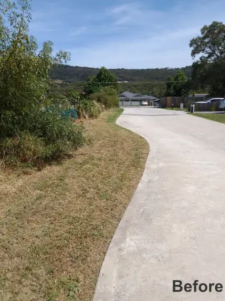
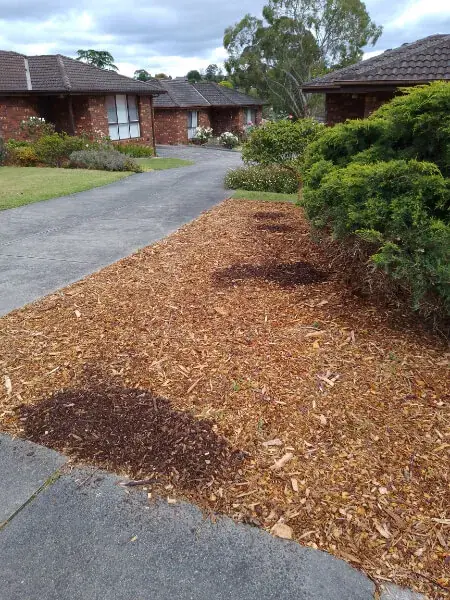
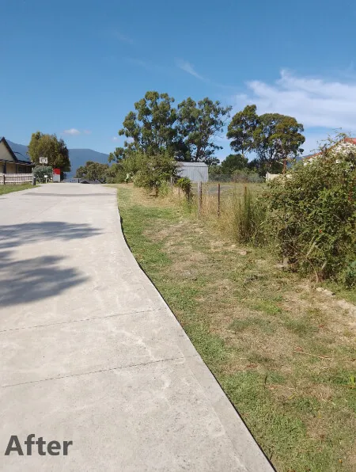
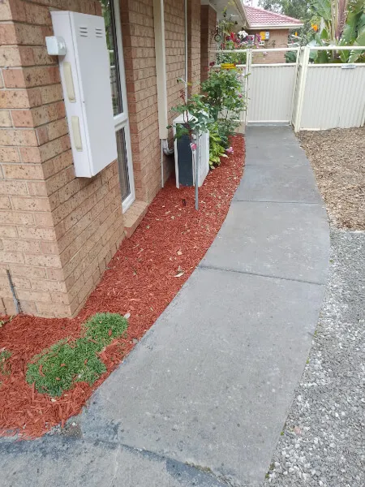
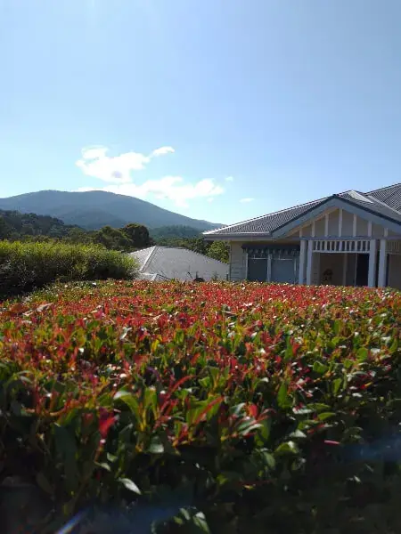
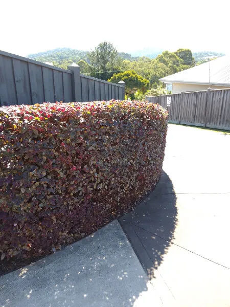

🚜
🚜Lawn Mowing & Edging
Regular, reliable mowing and clean edging to keep your lawn neat, green and healthy — big blocks and small yards alike.
Learn more →Professional lawn mowing Yarra Valley homeowners trust — plus hedge trimming, weed control, mulching and full garden maintenance across Three Bridges, Healesville, Yarra Glen and the Eastern Melbourne suburbs.
At My Little Garden Helper, we take pride in delivering exceptional, reliable and friendly service to every client. Whether you need regular lawn mowing in the Yarra Valley, an overgrown block tamed, or a complete garden transformation, our experienced local team has the knowledge and equipment to handle it — leaving your garden neat, healthy and beautiful.
Based in Three Bridges and proudly Australian owned, we make it easy to keep your outdoor space looking its best all year round — without the weekend labour.
From weekly mows to seasonal clean-ups, we offer a full range of garden care across the Yarra Valley and Eastern Melbourne — each delivered with the same care we'd give our own place.
🚜Regular, reliable mowing and clean edging to keep your lawn neat, green and healthy — big blocks and small yards alike.
Learn more →
🌾Overgrown blocks, long grass and rough edges tackled with commercial brushcutters to reclaim your outdoor space.
Learn more → ✂️
✂️Precise shaping and trimming that keeps hedges dense, tidy and healthy — enhancing privacy and street appeal.
Learn more →
🍂Quality mulching to lock in moisture, suppress weeds and give your garden beds a rich, finished look.
Learn more →
🌳Ongoing garden care packages covering weeding, tidying, feeding and everything in between — season after season.
Learn more →
🌱Effective weed control to keep beds, paths and lawns clear, so your garden stays low-maintenance and looking its best.
Learn more →
🌿Careful pruning of shrubs and plants to encourage strong, healthy growth and beautiful blooms year after year.
Learn more →
My Little Garden Helper is a locally owned and operated business based in Three Bridges, proudly serving the Yarra Valley and Eastern Melbourne suburbs. We combine genuine care with the right equipment to keep your garden looking its best all year round.
Taming overgrown gardens is our specialty. Whatever the state of your yard, we can restore it to a neat, healthy and enjoyable outdoor space.
Don't let an overgrown lawn ruin the look of your property. See the difference a visit from My Little Garden Helper makes.

BEFOREWe cover a wide service area for lawn mowing and garden maintenance. Don't see your suburb? Get in touch — chances are we can help.
Contact us now for a free quote on any of our gardening services or to ask about our tailored maintenance packages. Our team is ready to bring your garden back to life.
Your request has been received. We'll be in touch shortly with your free quote.